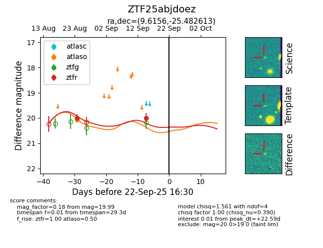
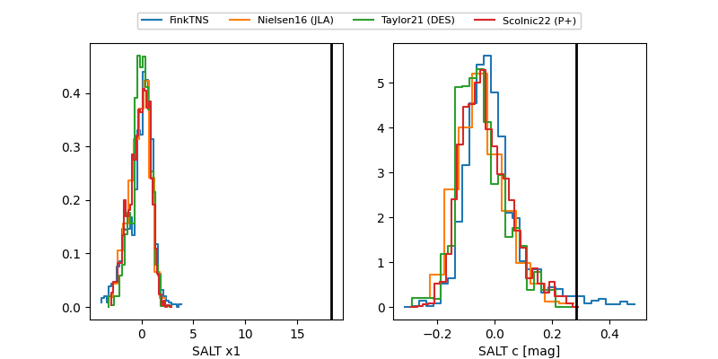

FINK: ZTF25abjdoez
Lasair: ZTF25abjdoez
ALeRCE: ZTF25abjdoez
ZTF25abjdoez (ztf,fink)
equatorial (ra, dec) = (9.6156,-25.48261)
galactic (l, b) = (61.7117,-86.65893)


last atlaso=20.06, ztfr=19.99
1 atlaso, 2 ztfr detections